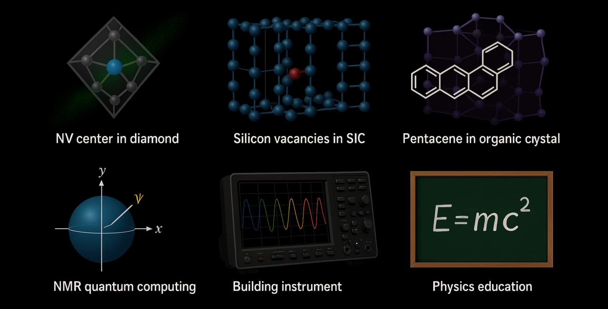

Welcome to the Quantum Lab
Based in the Department of Physics at Guru Nanak Dev University, Amritsar, our research group stands at the forefront of quantum information science. We focus on advancing quantum sensing and its applications in magnetic resonance, developing novel quantum algorithms, and exploring the fundamental nature and applications of quantum entanglement. Our mission is to strengthen India’s role in the global quantum technology landscape through world-class research and by training the next generation of quantum scientists and engineers.
We combine theoretical physics with computational science to address complex challenges in quantum technologies. The core values of our lab are scientific rigor, creativity, and collaboration—driving us to solve some of the most profound problems in modern physics. We believe that a strong interdisciplinary approach is essential to unlocking the full potential of quantum mechanics. We invite you to explore our website to learn more about our work in quantum sensing, quantum machine learning, and secure quantum computation.
Research Projects

Quantum Sensing
Our research in quantum sensing leverages the quantum properties of spin defects to achieve ultra-sensitive measurements of magnetic fields, temperature, and pressure. We focus on solid-state systems such as silicon vacancy centers in silicon carbide and photoexcited triplet states in pentacene-doped organic crystals, which operate effectively even under ambient conditions.
By engineering and controlling these quantum defects, we aim to develop scalable, room-temperature quantum sensors for applications ranging from nanoscale magnetic resonance and materials characterization to biological sensing. Our ongoing work combines optical spectroscopy, spin dynamics, and quantum control techniques to push the limits of precision measurement and quantum-enabled detection.

Quantum Machine Learning Algorithms
This research area explores the intersection of quantum computing and artificial intelligence. We develop and analyze quantum algorithms that can offer significant speedups for machine learning tasks. Our work includes creating quantum kernels for support vector machines, designing quantum neural networks, and exploring variational quantum algorithms for optimization problems.
We are particularly interested in applying these algorithms to real-world datasets in fields such as drug discovery and financial modeling. A key challenge we address is the development of noise-resilient algorithms that can run effectively on today's noisy intermediate-scale quantum (NISQ) devices.

Fault-Tolerant Quantum Error Correction
The fragility of quantum states is a major obstacle to building large-scale quantum computers. Our group works on the theory and implementation of quantum error correction (QEC) codes. We design codes that can protect quantum information from decoherence and other errors by encoding it across multiple physical qubits.
We are currently focused on surface codes and color codes, analyzing their performance thresholds and resource requirements. Our research also involves developing efficient decoding algorithms that can identify and correct errors in real-time, a crucial step towards achieving fault-tolerant quantum computation.